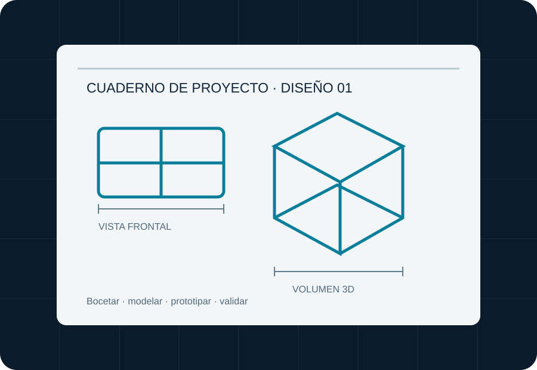

Investigar
Entender a quién va dirigido el producto y qué necesidad resuelve.
02 — FORMACIÓN ACADÉMICA
El grado combina conocimientos científicos y técnicos con procesos creativos para dirigir el ciclo de vida de un producto.

ESTRUCTURA DEL GRADO
La titulación se organiza en cuatro cursos académicos. Los créditos se distribuyen entre formación básica, asignaturas obligatorias, optativas e intensificación, además del trabajo final.
4 cursos académicos
*En el plan específico del campus de València, el documento 2026/27 desglosa esos 48 ECTS en 30 ECTS optativos y 18 ECTS de intensificación. Se debe consultar el plan vigente antes de matricularse.
PRIMER CURSO · EJEMPLOS REALES
Estas son algunas asignaturas que aparecen en el plan oficial 2026/2027 del campus de València. No es una lista completa de los cuatro cursos.
| Asignatura | ECTS | Qué aporta |
|---|---|---|
| Matemáticas I | 9 | Herramientas de razonamiento y cálculo. |
| Física | 9 | Comprender fenómenos y principios físicos. |
| Expresión Artística | 9 | Desarrollar recursos de representación visual. |
| Expresión Gráfica I | 7,5 | Comunicar ideas mediante dibujo técnico. |
| Informática | 6 | Incorporar herramientas digitales al trabajo. |
| Diseño Básico y Creatividad | 7,5 | Introducir procesos de diseño y creatividad. |
Las descripciones de la tercera columna resumen el ámbito de aprendizaje; no sustituyen a las guías docentes oficiales. Fuente: plan de estudios UPV 2026/27.
COMPETENCIAS QUE SE COMBINAN
El trabajo de diseño industrial necesita conectar distintas áreas del conocimiento:
ITINERARIO FORMATIVO
Entender a quién va dirigido el producto y qué necesidad resuelve.
Generar propuestas, bocetos, planos y modelos.
Elegir materiales y procesos para comprobar la solución.
Mejorar el diseño y preparar su fabricación y lanzamiento.
MI OPINIÓN
Las asignaturas que más me atraen son Tecnología, Educación Plástica y Matemáticas, porque me gusta la creatividad, diseñar y descubrir cómo funcionan las cosas. Creo que las asignaturas que más me pueden costar son Física y Matemáticas, porque requieren bastante práctica y razonamiento. Este plan de estudios encaja con mis intereses porque me gustaría aprender a diseñar y crear productos útiles, innovadores y originales. Además, me permitirá desarrollar mi creatividad y adquirir los conocimientos necesarios para trabajar en el mundo del diseño industrial.